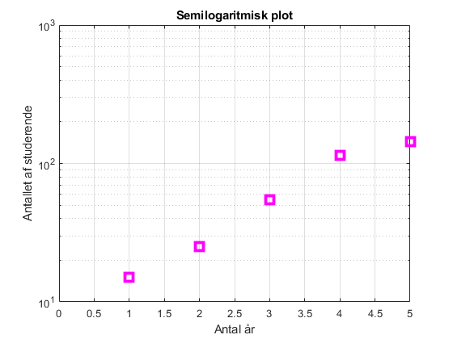
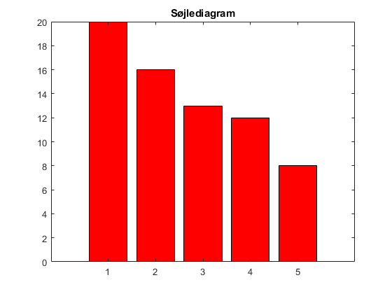
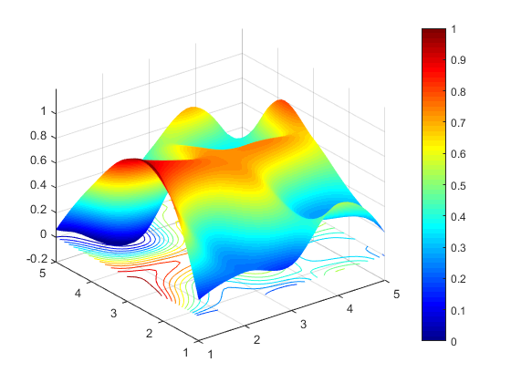

Contents
% HjemmeOpgave 2
Opgave 2.1 Semilogaritmisk plot
% antallet af studerende igennem 5 år, præsenteret som vektor studerende = [15 25 55 115 144]; % plottet med magenta firkanter, linewidth-4, markørstr.-10 semilogy(studerende,'ms','Linewidth',4,'MarkerSize',10) % 5 værdier på x aksen xlim([0 5]) % tilsvarende labels på x og y aksen xlabel('Antal år') ylabel('Antallet af studerende') % title til plotet title('Semilogaritmisk plot') grid on
Opgave 2.2 Søjlediagram
% først laves en vektor med 5 værdier diagram = [20 16 13 12 8]; % søjlediagrammen med rød farve bar(diagram,'r') title('Søjlediagram')
Opgave 2.3 Interpolation og overflade plots
% 5x5 matrix af tilfældige værdier Z0 = rand(5); % lav X0 Y0 variabler via meshgrid, 25 punkter på overfladen vector1 = [1:5]; [X0,Y0] = meshgrid(vector1,vector1); % værdierne interpoleres for at få overfladen til at blive glat vector2 =[1:0.1:5]; [X1,Y1] = meshgrid(vector2,vector2); % interpolation of vectors with cubic Z1= interp2(X0,Y0,Z0,X1,Y1,'cubic'); % plot overfladen af Z1 med surf, brug shading og colormap surf(X1,Y1,Z1) shading interp; colormap jet; % sæt grænser til z akse zlim([-0.2 1.2]); %sæt hold on og contour med niveau 15 hold on contour(X1,Y1,Z1,15); % tilføj colorbar colorbar; %Sæt farveaksen til at gå fra 0 til 1 (caxis) caxis([0 1]);